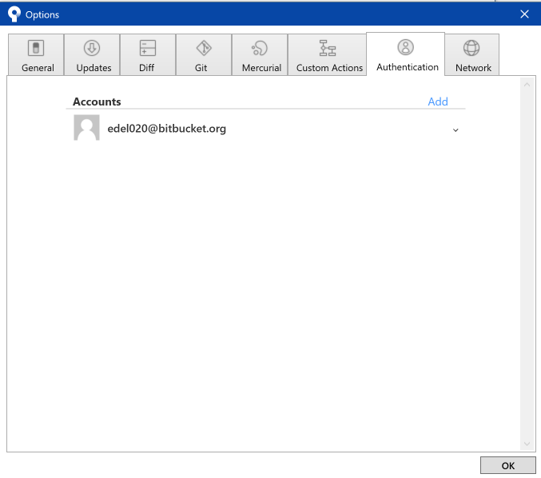

Objectives
Install and Configure Git + the Sourcetree git GUI
Git, Github & Bitbucket
You should already have git installed on your workstation. If not, download and install from here:
Verify that is is by opening a shell (command prompt on Windows) and enter the following:
git --versionThe system might respond with something like this:
git version 2.20.1Github
Sign up for a github account:
Be sure to verify your email.
Bitbucket
Sign up for a github account:
Be sure to verify your email.
Install Sourcetree
Visit:
And download and install the application for your platform.
On the very first screen - you will be asked to log in to you Atlassian Bitbucket account. You should have created this in the last step.
Select 'Bitbucket' in the first screen:
Once your account is verified, you should see this:

In the next screen, select advanced options and select the options below:

Enter your full name and email address:

You will be asked about ssh keys - you can skip this step for the moment:
You will eventually get this start screen:
The installation will be automatically linked to a bitbucket account. We should now also link it to your github account.
Select Tools->Options->Authentication and follow the steps below:

Add a new github account
Enter github account name and select 'refresh password'
Your github account should be verified - and you should now have 2 linked accounts:

Create new Repo on Github
Back on github:
Create a new repository:

This will create a new empty repo on github.

Note carefully the url of the repo - in the box above. Copy this to the clipboard now.
Create New Application
We now would like to start a new play application, which we will associate with the github repository we have just crested.
First, create a new app by cloning a starter app:
Create New Project
Create a new play project using this command:
git clone https://github.com/wit-hdip-comp-sci-2019/play-template-1The shell should show something like this:
Cloning into 'play-template-1'...
remote: Counting objects: 66, done.
remote: Compressing objects: 100% (47/47), done.
remote: Total 66 (delta 9), reused 66 (delta 9), pack-reused 0
Unpacking objects: 100% (66/66), done.Rename Project
The default name of the project should be changed now. This will require the following procedure:
- Rename the folder
play-template-1. Call the foldertodolist-versionedinstead. Use Sublime Text to edit this file:
playlist/conf/application.conf. The first three lines contains the following:# This is the main configuration file for the application. # ~~ application.name=play-template-1Change
play-template-1above totodolist-versioned, and save the file:# This is the main configuration file for the application. # ~~ application.name=todolist-versioned
Unbind from github
This app has been cloned from github - and is still bound to the repository it was cloned from. We can break this link - and we will reestablish a link to a new github repository you will create in the next steps.
To break the existing link, simply completely delete the .git folder form the project:
(you may need to reveal hidden files to see the folder)
Set Remote Repo
Your Sourcetree app currently looks like this:
Select the Create button from the toolbar and locate the folder containing the project we have just created:

Press Create - and select Yes in the subsequent dialog:
Sourcetree will now be configured as shown:
We can now 'stage' all of the sources in the project by pressing the 'Stage All' button:

With the configuration as shown above, enter a short message 'template play project' as shown:
Press 'Commit' and the Source tree will be configured like this:
Finally, select 'master' on the left:

This seems a complex, but the process is always the same:
- Stage: this is selecting which files to be added (or which changed files are to be added)
- Commit Message: a easily readable short message
- Commit : bind the changes + commit message and update the repository
Bind the Local Repo to a Remote one
Is Sourcetree, select Repository-Repository Settings:
Press add, and enter the following:
- Remote Name: 'origin'
- URL/Path : - enter the repository path that for the repository you created in Step 03 of this lab.
Press ok:
Back in the main Sourcetree window, press 'Push'
In the subsequent dialog, tick the checkbox next to 'master', and then press push. This will transfer a copy of the local files in the repository to the copy on github.
Eventually, Sourcetree will settle into this view:
.. and if you look at the github site and the repo you created in step 03, you should see a copy of the project:
The 'local' and 'remote' repositories are now linked - and changes we make locally we will need to explicitly push a 'commit' of new additions as we make them.
Exercises
To get fluent with this procedure, try the following:
Exercise 1: Github Practice
Create another new app - called demo-1 - using the procedure specified on Step 03.
Then, following steps 04, 05 and 06, attach the new project to the demo-1 github repo.
Exercise 2: Bitbucket Practice
The procedure we carried out to bind a local repo to github can also be carried out to bind a repo to a bitbucket hosted repository.
Create (another!) new project demo-2 - this time see if you can figure out how put it on bitbucket.
The main difference between github and bitbucket is that github repos are always public, whereas bitbucket can be either, but default to private.